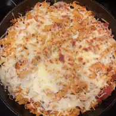

Macroons

Description
this macroons is my fav xd omeglalul get L + ratio also 24 people can eat this or u can eat it by urself u fat man
this macroon is yummy yum pls like or die
Ingredients
- 3 egg whites
- 6 tablespoons superfine (castor) sugar
- 1 cup almond meal
- im tired figure it out by urself
Steps
- Preheat the oven to 320 degrees F (160 degrees C). Line baking sheets with parchment paper or a silicone mat.
- Whisk egg whites in a clean metal mixing bowl until thick, about 5 minutes. Whisk superfine sugar into egg whites until thick, glossy, and stiff peaks form, 5 to 8 more minutes.
- Sift almond meal and confectioners' sugar over beaten egg whites; gently fold in, retaining as much air as possible.
- im tired figure it out by urself